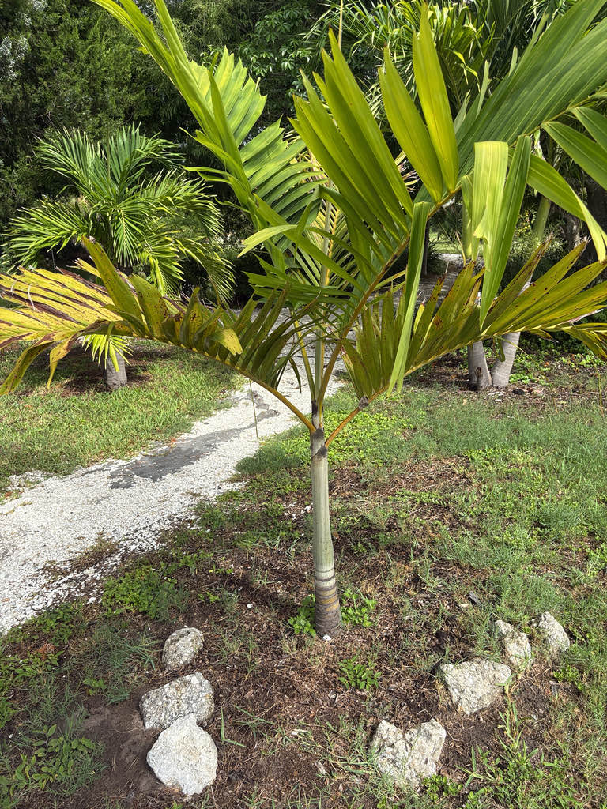

- This palm is a living monument to the Victorian age of plant exploration. In 1864, John Gould Veitch — 25 years old and already a veteran of Japan — braved the South Pacific on his second expedition and shipped this unknown canopy giant back to England. He died of tuberculosis at 31, but the genus and its anchor species carry his name permanently in every landscape where this palm grows.
- This is the most cold-tolerant Veitchia in cultivation — which is the only reason it survives outdoors in Manatee County at all. Bradenton sits right at the northern edge of the species' reliable range, and the park's specimen endures here in part because Palma Sola Bay moderates winter air temperatures just enough to tip the balance in its favor.
- The fruit is a field mark all by itself: an elongated, beaked, bright scarlet drupe about two inches long. The beak — a pointed tip at the apex of each fruit — is unusual enough that palm botanists list it as a key identifier for the species.
- As the lower fronds age, they droop well below the horizontal plane of the crown — a distinctive drooping habit that sets Veitchia joannis apart from other similar feather palms at a glance.
The Joannis Palm is native to the rainforests of Fiji, where it grows as an emergent canopy palm from near sea level to roughly 400 meters elevation, typically on well-drained slopes and ridges. It also occurs in secondary forest on the islands of Viti Levu, Ovalau, Gau, and Vanua Levu, and has naturalized in Tonga.
The species entered Western botany in the 1860s, when John Gould Veitch — a plant collector for the famous Veitch Nurseries of London and Exeter — collected specimens during an expedition to northern Australia, New Caledonia, and Fiji. German botanist Hermann Wendland formally described the genus and species in 1868, in Berthold Seemann's Flora Vitiensis, making V.
joannis the type species of the new genus.
Both genus and species names honor the Veitch collecting dynasty. The genus Veitchia commemorates the family; the species epithet joannis is the Latinized form of 'John,' specifically for John Gould Veitch, who collected the palm. Today the species is cultivated across tropical regions worldwide, including southern Florida, where it is valued as a tall specimen palm in warm, frost-free landscapes.
- Veitchia joannis is one of the larger members of its genus — mature trees in the wild can reach 30 meters or more, making them emergent above the surrounding forest canopy. In Florida cultivation, specimens typically stay considerably shorter, though old, well-established individuals in Zone 10b and warmer can become genuinely imposing.
- John Gould Veitch's second expedition (1864–1866) ranged across northern Australia, New Caledonia, and the Fiji Islands, yielding a wide haul of tropical plants. He was one of the first Westerners to climb Mount Fuji (during his first trip to Japan), and he died of tuberculosis — almost certainly contracted during his travels — at just 31.
- The Royal Horticultural Society's Veitch Memorial Medal was established partly in his memory, and the genus Veitchia, with this palm as its anchor species, is the most visible botanical monument to his Pacific travels.
- The species is monoecious — male and female flowers appear on the same tree — so a single palm is capable of setting its full crop of bright red fruit without a pollen partner nearby. The inflorescences are carried on arching stalks below the crownshaft, branching to three or four orders and bearing small greenish-white flowers.
- Fruit ripen to a vivid scarlet and have a distinctive pointed beak at the tip, a reliable identification feature within the genus.
- Veitchia joannis is considered the most cold-tolerant species in the genus and reportedly can survive brief exposure to around 26 degrees F in well-established specimens. Even so, it is best treated as a true tropical palm — Bradenton and Manatee County sit right at the northern fringe of its reliable outdoor range, and a hard freeze can set back or kill an unprotected specimen.
The monoecious inflorescences, carried below the crownshaft on branched stalks, attract pollinating insects when in flower. Because every tree can set fruit without a cross-pollination partner, fruiting is reliable where the palm is well established.
The bright scarlet drupes — elongated, beaked, and roughly two inches long — are visually conspicuous when ripe and are taken by fruit-eating birds, which disperse seeds beyond the parent plant.
As a non-native palm with no deep evolutionary history with Florida's fauna, it does not function as a larval host for local butterflies or moths. Visitors seeking the park's strongest butterfly and pollinator habitat will find it among the native plantings.
Inflorescences are arching, up to about 79 cm long, and branched to three or four orders. They emerge below the crownshaft (infrafoliar) and carry small greenish to white male and female flowers on the same stalk — so every individual tree can set fruit without a separate pollen source.
Ovoid, beaked, bright scarlet drupes roughly 4 to 6 cm long. The distinctive pointed beak at the tip of each fruit is a useful field mark for the species within the genus. Each fruit contains a single seed; seeds are large and germinate readily.
Pinnate (feather-form), to about 3 meters long, with a gracefully arching rachis. Leaflets — roughly 70 to 80 pairs — are lanceolate, dark green on both surfaces, and arranged in a single plane. As fronds age and the rachis elongates, the whole leaf droops markedly below the horizontal, giving the crown a distinctive weeping quality unlike most feather palms.
Leaflet tips are jaggedly toothed (praemorse) rather than coming to a clean point.
The crownshaft is 60 to 120 cm long, slightly swollen at the base, and whitish-green speckled with olive, grey, and brown tones. The trunk is solitary, grey, and markedly ringed with prominent leaf-scar rings; it bulges slightly at the base and can reach 25 to 40 cm in diameter at maturity.
Start by looking up at the lower canopy: unlike most feather palms, the oldest fronds here cascade sharply downward well below the horizontal, giving the crown a weeping, layered quality that stands out immediately. Next, find the crownshaft — the smooth cylinder sitting between the trunk and the frond bases.
It is not simply green; look for a slightly swollen column with a whitish-green surface speckled in olive, charcoal, and grey. Finally, pull a low leaflet into view and inspect the tip: instead of tapering to a point, it ends in a jagged, torn-looking edge — the botanical term is praemorse, and it is a reliable identifier for this species within the genus.
The immature seeds are eaten as a snack in Fiji, and young leaf buds can be eaten raw, so this palm has genuine traditional food uses — though neither is a common practice in Florida. No toxicity to people or dogs has been documented. The large seeds and fruit flesh are not a standard food source here, and the ripe fruit should simply be left for birds.
Bradenton and Manatee County sit at the northern edge of this palm's reliable outdoor range. USDA Hardiness Zone 10a is the accepted minimum, with established specimens reportedly surviving brief dips to around 26 degrees F — but a serious freeze can kill or severely damage an unprotected tree. The park's specimen benefits from the thermal buffer of Palma Sola Bay.
The species name is sometimes spelled johannis in older references and nursery catalogs. The accepted spelling, following the original 1868 Wendland description, is joannis.

- © Randall Carter (CC-BY-NC), via iNaturalist